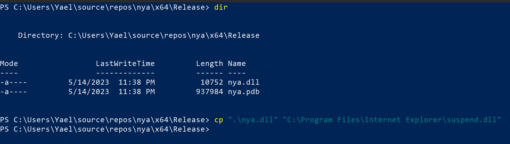

welcome to my digital grimoire! i'm a young witch in training, a cybersec enthusiast, and an avid supporter of free software. i'm also a firm believer in the power of cats, music, and esotericism - because let's be real, who doesn't love a good dose of magic in their lives?
as you wander through my website, you'll find that most of my work is self-driven, with a focus on linux, cybersecurity, and retro computing.
some of my current programming interests at the momemnt are:
~ binary exploitation (kernel level specifically)
~ windows internals and malware (Ü< VX >Ü)
~ functional programming
~ (un-)typed lambda calculus and other minimal forms of computation
~ personal computing (uxn, plan9front, haiku...)
My journey with Rust has been rocky to say the least, from fandom to hating back to loving it, I never stopped learning about how I program and engineer. I'm a huge nerd of Functional Programming and the thing that absolutely sold me about rust is it's algebric type system, it is my biggest joy to bring type proofness and complexity to low level programs. The pattern matching in it makes for expressive, readable and type-safe code. In this blog article we will take a look at this topic, and I hope you can learn something from it :3
Patterns
Refutable vs irrefutable
Patterns in Rust come in two types; refutable and irrefutable. Patterns that match conditionally are called refutable, while patterns that match any possible value are called irrefutable. Which one you can use will depend on the context. For example, a let-statement will need a irrefutable pattern, because what would happen if a variable in a let-statement doesn’t get a value?
// Irrefutable patterns - variable bindings, always succeeds
let x = 5;
let (x, y) = (1, 2);
// Doesn't compile
let Ok(x) = string.parse::<i32>() // parsing a string will return a Result<T>, and it is refutable whether it's an OK(x)
if let statements on the other hand can have refutable patterns, as the body is evaulated conditionally and it's refutability is inherent:
if let Ok(x) = string.parse::<i32>() {
// ... do something if string can be parsed as a 32 bit integer ...
}
// if let can have a refutable pattern, so we can also use a value for x:
if let Ok(64) = someString.parse::<i32>() {
// ... do something if string can be parsed as a 32 bit integer ...
}
Destructuring
Many patterns destructure various types, and they can also be mixed and match together. Let\’s look at some of them together~
Tuples
You are already probably familiar with tuple destructuring, but let's examine again:
// tuple: (i32, i32, &str)
let tuple = (1, 2, "three");
let (x, y, z_str) = tuple;
We see in the last line that tuple is destructured into 3 new variables: x, y, and z_str.
This can be done for all sorts of tuples, as long as the destructured types match.
My favorite trick is that you can match elements with .. or _, which are used to skip elements and create more complex logic:
// discard z_str
let (x, y, _) = tuple;
// get only x
let (x, ..) = tuple;
let big_tuple = (1, 2, 3, 4, 5);
// Does not compile, ambigious pattern.
let (..., middle, ...) = big_tuple;
(Patterns have to be unambigious)
Structs
Structs are not much different than tuples, i'll save your internet bandwidth by not showing an example although it is very self explanatory. The only difference is the .. behaviour, when deconstructing it has to come last and it means to match the rest and ignore the result.
Enums
This might be the simplest yet most important of them all, the simplest case for enum deconstructing is to match one with no data:
// simple enum
enum TrafficSignal {
Red,
Orange,
Green
}
// match if our color is green
if let Color::green = my_color {
// cars go!
}
Luckily, Rust enums are way way more interesting as they contain data. So much complexity arises out of that.
// complex enum
enum Enemy {
Alive(u32),
Dead
}
// match against an alive enemy
if let Enemy::Alive(data) = my_enemy {
// oh no! gotta beat them >:3
}
// match against a dead enemy
if let Enemy::Dead = my_enemy {
// you win~!
}
Other Patterns
There are other types of patterns in Rust that capture a lot of elementary and cool behaviour. Since they're varied it is best to just demonstrate them:
// OR pattern
1 | 2 | 3 // matches 1, 2, or 3
"one" | "two" // matches one of these two strings
// range pattern
1..=10 // matches 1 to 10 (inclusive)
1..10 // matches 1 to 10 (non-inclusive)
// at pattern
struct Point {
x: i32,
y: i32
}
// matches if my_x exists under an optional condition
if let Point {x: my_x @ 1..=10, ..} = my_data {
// my_x is between 1 and 10.
}
The Payoff
pattern matching is closely related to Rust's powerful algebric type system. We can combine the different behaviours of patterns in order to write clear and simply awesome code~!
One example that speaks to itself and shows the immense power pattern matching has is to pit it against object-oriented code. let's consider a case where we have a Shape hierarchy with two concrete classes (Circle and Rectangle), we'll compare the object-oriented approach in java with the pattern matching code in Rust.
Java (OOP):
abstract class Shape {
abstract double calculateArea();
}
class Circle extends Shape {
private double radius;
public Circle(double radius) {
this.radius = radius;
}
public double calculateArea() {
return Math.PI * radius * radius;
}
}
class Rectangle extends Shape {
private double width;
private double height;
public Rectangle(double width, double height) {
this.width = width;
this.height = height;
}
public double calculateArea() {
return width * height;
}
}
public class Main {
public static void main(String[] args) {
Shape shape = new Circle(5.0);
if (shape instanceof Circle) {
Circle circle = (Circle) shape;
double area = circle.calculateArea();
System.out.println("Area of Circle: " + area);
} else if (shape instanceof Rectangle) {
Rectangle rectangle = (Rectangle) shape;
double area = rectangle.calculateArea();
System.out.println("Area of Rectangle: " + area);
}
}
}
Rust (Pattern Matching):
enum Shape {
Circle(f64),
Rectangle(f64, f64),
}
fn calculate_area(shape: Shape) -> f64 {
match shape {
Shape::Circle(radius) => std::f64::consts::PI * radius * radius,
Shape::Rectangle(width, height) => width * height,
}
}
fn main() {
let circle = Shape::Circle(5.0);
let circleArea = calculate_area(circle);
let rectangle = Shape::Rectangle(5.0, 2.0);
let rectangleArea = calculate_area(rectangle);
println!("Area of Circle: {circleArea}", circleArea);
println!("Area of Rectangle: {rectangleArea}", rectangleArea);
}
Conclusions
I could go on about it for much longer, although I hope that was enough for the knowledge-hungry.
I hope you now understand pattern matching a little better and see how it is a fundamental and powerful feature in Rust that contributes to its overall expressiveness and safety. Embracing it in my code greatly enchanced my programming exprience and generally leads to more robust and maintanable applications.
One of the controversial concerns with Microsoft's smash hit Windows is the bloat in software and features. It is a focal point point in malware targeting, abusing poorly designed systems and preying on it's huge userbase.
All of it undeniably ties in into The Browser Wars Microsoft found themselves in, all tech corps trying to shill their spyware packaged with an open-source web browser engine. Besides my serious non important opinions on the matter, I think we're all familiar with Internet Explorer, an old piece of tech that still comes packaged on all Windows systems and is damn near impossible to get rid off.
Per usual, let's try to abuse the fact it is so atomic to Window's user experience and try to achieve some sort of malware persistence.
I opened procmon from the sysinternals utilities suite looking for potential DLL injections, in the case IE tries to load non existent / or creates it’s own DLLs we’re able to intervene and load our “malicious” ones.
Using these filters, we can look for specific kinds of DLLs that only exist on runtime:
Let's open the executable and observe :3
So many... We need to look for files that are used exclusively by IE, one that came up that has a readable and non suspicious name is suspend.dll.
Here's a "malicious" DLL we can use to emulate code execution needed for persistence, a real malware would hide here persistent code.
#include <windows.h>
#include "pch.h"
#pragma comment (lib, "user32.lib")
BOOL APIENTRY DllMain(HMODULE hModule, DWORD ul_reason_for_call, LPVOID lpReserved) {
switch (ul_reason_for_call) {
case DLL_PROCESS_ATTACH:
MessageBox(
NULL,
L"you just got pwned~",
L"/ᐠ. ᴗ.ᐟ\\ﾉ",
MB_OK
);
break;
case DLL_PROCESS_DETACH:
break;
case DLL_THREAD_ATTACH:
break;
case DLL_THREAD_DETACH:
break;
}
return TRUE;
}
Time for compilation, I will use Visual Studio's built in solutions although it is fairly flexible.
After it's done, we need to put it where IE loads it from and rename it to solution.dll:

WOW, we got our pwn~
Our code got executed and then Internet Explorer launched per normal. This is pretty pretty cool...
What can we take away from this?
While this particular proof of concept has been patched somewhere last year, I believe it holds a lot of relevancy in practices of persistence and malware design as a whole.
Looking for fundemental features Microsoft doesn’t want to get rid off (nor can't) and find flaws in their behaviour is a cornerstone in this field. In addition, DLL injection in this way is incredibly simple yet demonstrates understanding of Windows Internals.
Over the years of my CTF'ing I always come back to pwnable.kr, although a tad outdated it's a vast source of simply awesome binary exploitation and pwn challanges. In particular their kernel exploitation series of challanges interest me - they're really well made and good introductory material on the matter. Per the policies on the site, this writeup won't share any source code and try to be minimal as possible.
The last of those challanges is softmmu, here's the readme:
If you are good at kernel exploit, try this one :)
The Challange
We're given two things: a linux kernel object file containing some sort of a driver, and access to a fairly old linux virtual machine loaded with asid driver. Before we open the executable for further inspection in IDA, let's SSH into the machine and check what it does.
...
[+] Loading x86 PAE MMU emulator
[+] Write the virtual address to /proc/softmmu
[+] You can obtain it's physical address by reading /proc/softmmu
[+] i.e. echo -ne '\x00\x80\x04\x08' > /proc/softmmu; hexdump -C /proc/softmmu
[+] Let the kernel exploit begin :)
$ uname -a
Linux (none) 3.7.1 #1 SMP Mon Dec 23 06:07:19 PST 2013 i686 GNU/Linux
$ ls /*.ko
/softmmu.ko
Hmm, it prints out a pretty explanation for us :3 As the name softmmu hints - the module interfaces with the Linux kernel memory's and emulates a x86 Page Address Extension for the MMU. The interface with the module seems to be very straightforward, we write a virtual address to the device file /proc/softmmu and then read back the physical address.
Finding A Vulnerability
Our end goal is to get root, so we definitely have to find a vulnerability to expoloit in the softmmu module. Let's open the kernel object file in IDA to analyze:
A fairly tame program, not too many functions and fairly straightforward structure. We are not going to reverse the entire program (since I found the vulnerability quickly) but here are some pointers:
> We cannot request the physical addresses of ones outside userspace (seems important for the exploit).
> It recursively traverses page table within the mmu_walk() function in order to retrieve addresses.
> Program contains verbose output for debugging purposes.
The last point is particulary important; it allows us to understand the inner workings better and perhaps find a vulnerability to exploit, let's look at the debugging code.
Fairly bloaty raw decompiled code, but breaking it down it is very simple: it retrieves a page table entry from a PD64 (Page Global Directory entry). Besides the pretty cool kernel level code, the vulnerability here is glaringly obvious - the program passes the address we request (a global variable) to printk().
> printk((const char *)req_vaddr);
Boom~!
We found a string format vulnerability we can control :3
Writing The Exploit - Pt. 1
So far this hasn't been a challenge for kernel experts, even a script kiddie can find this vulnerability. I must admit, writing the exploit is much more difficult because a plethora of reasons.
In order to pass a string to the module, we'd have to allocate some bytes in the process memory space. Let's try compile a simple C program on the remote machine to do just that:
/tmp $ gcc pwn.c
sh: gcc: not found
Oof, that means we have to cross compile.
The first problem that imposes us is the fact the remote machine is running a really outdated version of the kernel, paired with the fact it doesn't have internet access it really limits us in how we compile for it.
The soltuion that I came up with was as follows
compile a static no-stdlib program -> compress it -> base64 the tar.gz -> do the reverse on remote.
This means writing a minimal libc from scratch, good luck me...
After a fair amount of work, I got to a level where I had all of the necessary API's to leverage the vulnerability
On local machine:
OMG, it worked and we wrote into the process name <3! (As seen in the debug messages) All of this work wasn't for nothing.
Writing The Exploit - Pt. 2
Now for the second part of the exploit, we have to figure out how the hell we take advantage of the format string vulnerability. This isn't like the average format string attack as it's not performed on a userland stack, but a kernel one. Besides our request address which occasionally surfaces down the stack we get nada.
Luckily for us we have a bunch of debug values on the stack, some of them might be incredibly useful to craft an exploit. Yes! The stack is setup in a way we can write to the page table entry any arbtriary value we want, hence we change the permissions of a kernel pages and execute our code as supervisor :3
(We have a pointer for each byte and the corresponding address)
Since we have to fully comperhend the paging mechanism in full detail to execute this exploit properly, here's a diagram of the Page Table Entry structure:
There are many bits and flops, but assuming basic knowledge of paging nothing is too out of ordinary. The first three flags are interesting: P (Present), R/W (Read/Write) and U/S (User/Supervisor).
If the Present bit is set then the page is actually in physical memory at the moment, if the Read and Write bit is set then the page is both readable and writable (if not then it is read only) and lastly the USer/Supervisor bit is set based on privellege level.
We can get to work on patching the bytes of the PTE, we are able to patch one of our userspace page entries to pount to a physical adress that contains the kernel code of sys_setresuid() and make it writable. Once we got that we can flip the prillege check from je to jne, call setresuid(0) and obtain root >:3
This without a doubt is a serious challenge full of hurdles. Personally for me it symbolizes some sort of maturity in my cybersecurity journey, I learned so much throughout and I can't wait to do more.
About the softmmu itself, this post only showed the a small part of the failures. So much stuff I first tried didn't end up working at the end, this only shows how deep and complex it gets. I believe it is a prime example of diving deep and reading old documentation about the kernel's inner workings and trying to figure it all out.